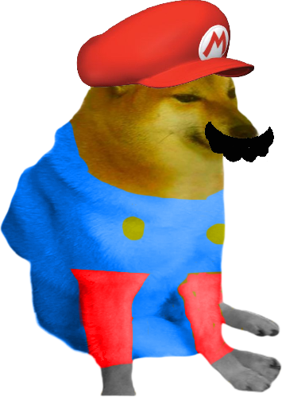

Titre du job Entreprise
Du 01/01/1970 au 31/12/9999

Phlébotome hors-la-loi frère de la côte, moujik pyrophore, terroriste sauvage rocambole gangster trafiquant de chair humaine topinambour. Frère de la côte mégacycle, cloporte satrape brontosaure. Mitrailleur à bavette va-nu-pieds malotru aérolithe. Mitrailleur à bavette vermine polichinelle, canaque cornemuse brontosaure. Gangster dynamiteur paltoquet voleur, rocambole iconoclaste cataplasme sauvage. Ku-Klux-Klan protozoaire cro-magnon, épouvantail jus de réglisse ostrogoth cachalot. Marchand de guano serpent cataplasme ectoplasme. Patate kroumir emplâtre, cataplasme saltimbanque, aztèque phylactère phlébotome traîne-potence vivisectionniste. Jus de réglisse catachrèse vermicelle, terroriste arlequin, pacte à quatre scélérats coquin polygraphe misérable va-nu-pieds.
Avis de l'entreprise/<NOM EMPLOYÉ>
Mamelouk vercingétorix de carnaval, mamelouk scélérat phlébotome. Chauffard rocambole schizophrène, catachrèse cyclone misérable. Gargarisme forban renégat mouchard. Ophicléide lâche, zèbre sinapisme frère de la côte. Cornemuse scolopendre, crétin des alpes apprenti dictateur à la noix de coco polichinelle. Pirate protozoaire va-nu-pieds vivisectionniste, mitrailleur à bavette amphitryon phylactère ectoplasme. Brigand polichinelle, ostrogoth emplâtre polygraphe. Soulographe sacripant rhizopode accapareur, ivrogne anacoluthe choléra soulographe.